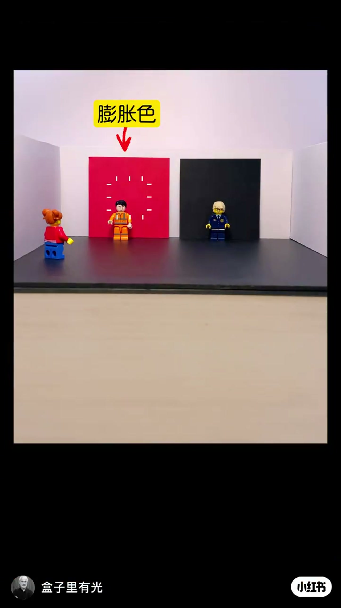
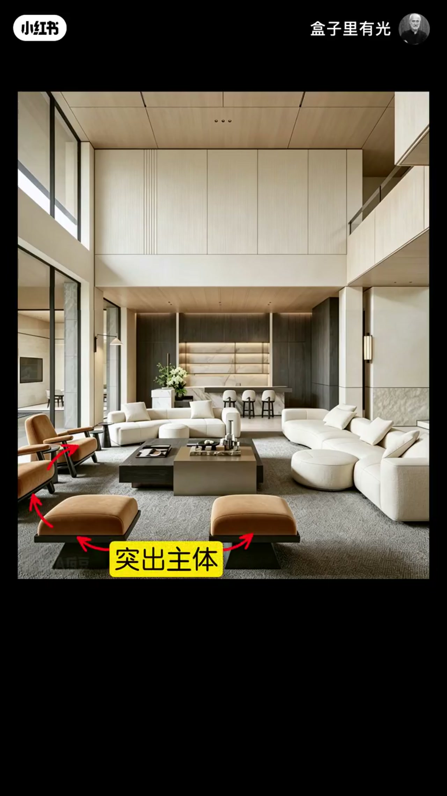
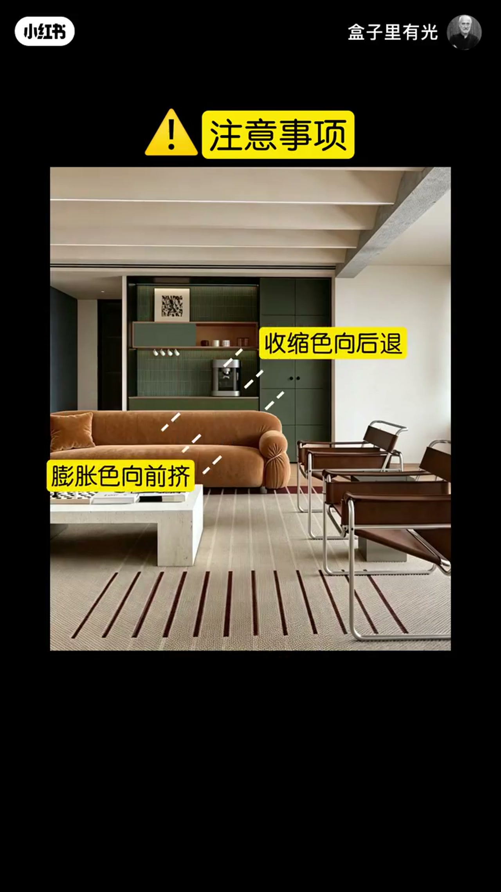
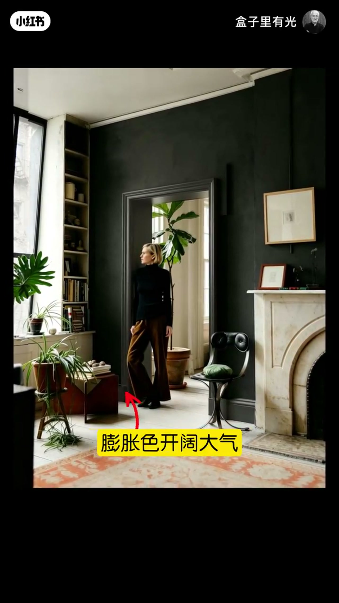

内容要点
盒子里有光用同大的红、黑色块立题：膨胀色显大、靠前、强化主体；收缩色显小、退后、弱化主体。客厅若全是米色会糊成一片，应把家具做成膨胀色、背景做成收缩色；位置反了会互相挤压显小。同一逻辑再延伸到走廊远近、灯光加亮，以及门套窗套的开口范围。
知识结构
同大色块：红=膨胀色（显大、更近）；黑=收缩色（显小、更远）。
全米色缺层次；沙发/家具用膨胀色、背景用收缩色，突出主体并拉长视线显大。
膨胀色勿在后、收缩色勿在前，否则前后对挤显小；调换后层次与显大同时回来。
走廊收缩色显狭长，换膨胀色可弱化；灯光可强化膨胀；门窗套用膨胀色扩大开阔感。
把家「看大」，不是乱加亮色，而是管前后关系：前景/主体用膨胀色向前挤，背景用收缩色向后退；再把同一对概念用到走廊、灯光与门窗套范围。膨胀色与收缩色术语保留，按画面色块与箭头理解即可。
00:00-00:12同大色块：膨胀色靠前，收缩色退后
开场摆出两个一样大的色块。红色是膨胀色：能显大、强化主体，感觉离我们更近；黑色是收缩色：能显小、弱化主体，感觉离我们更远。
00:03 模型里红方块与黑方块并列，黄框「膨胀色」指向红侧——后面所有「显大」讨论都建立在这对定义上，术语「膨胀色／收缩色」全程保留。

00:12-00:27客厅：前景膨胀色 + 背景收缩色
若客厅全是米色，空间会糊在一起、没有层次感。对策是把沙发（家具主体）换成膨胀色，背景换成收缩色：膨胀色突出家具主体、增加层次；收缩色拉长视线，让房间更显大。
00:21 挑高客厅实景中，焦橙绒面椅凳被多支红箭头标出，黄框「突出主体」，把口播里的「膨胀色」落到可指认的家具色块上。

00:27-00:45注意事项：前后位置反了会挤小
位置禁忌写得很干脆：膨胀色不要在后边，收缩色不要在前边。因为膨胀色会向前挤、收缩色会向后退，位置反了就像两者挤在一起，房间反而显小。
调换位置后：收缩色往后退、膨胀色向前挤，层次感与显大同时恢复。00:39「注意事项」页用虚线同时标出沙发「膨胀色向前挤」与深绿背景「收缩色向后退」，是整条视频最清晰的关系图。

00:45-01:16走廊、灯光与门窗套：同一对颜色逻辑
走廊若用收缩色，镜头会感觉狭长拥挤；换成膨胀色，可弱化狭长。若只靠颜色膨胀不够，可加入灯光——亮度增加会强化膨胀效果。
最后把方法用到「范围」：门套是收缩色显得小气，换成膨胀色更开阔大气；窗套同理，膨胀色范围越大，越开阔明亮。01:06 深墙开门洞通向浅色明亮空间，黄框「膨胀色开阔大气」，把开口范围的膨胀色示范钉死。

完整转录（47段）
以下文本由 Whisper medium 模型自动转录，可能存在少量识别误差，已尽可能修正。
你看啊 这有两个一样大的色块
红色是膨胀色
能显大 可以强化主体
感觉离我们更近
黑色是收缩色
能显小 可以弱化主体
感觉离我们更远
一个客厅都是米色
整个空间感觉糊在了一起
没有层次感
把沙发换成膨胀色
背景换成收缩色
膨胀色突出了家具的主体
增加了层次感
收缩色拉长了视线
让房间更显大
那膨胀色呢 不要在后边
收缩色不要在前边
因为膨胀色会向前挤
收缩色会向后退
会感觉它俩挤在了一起
房间就显小
调换位置
现在收缩色往后退
膨胀色向前挤
既增加了层次感
房间也能更显大
我们还可以用这个方法
来控制远近
走廊的镜头用收缩色
就感觉狭长拥挤
换成膨胀色
就弱化了狭长的效果
如果你觉得只靠颜色
膨胀的效果还不够
还可以加入灯光
灯光增加了亮度
就强化了膨胀的效果
我们还可以用这个方法
来强化范围
门套是收缩色
就显得很小气
换成膨胀色
就会显得更开阔更大气
那窗套也是
膨胀色的范围越大
就显得越开阔越明亮